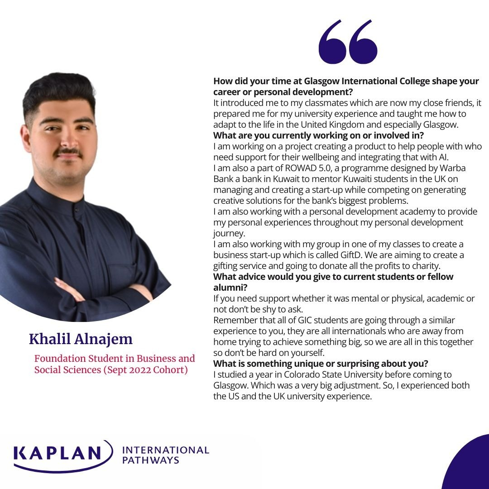
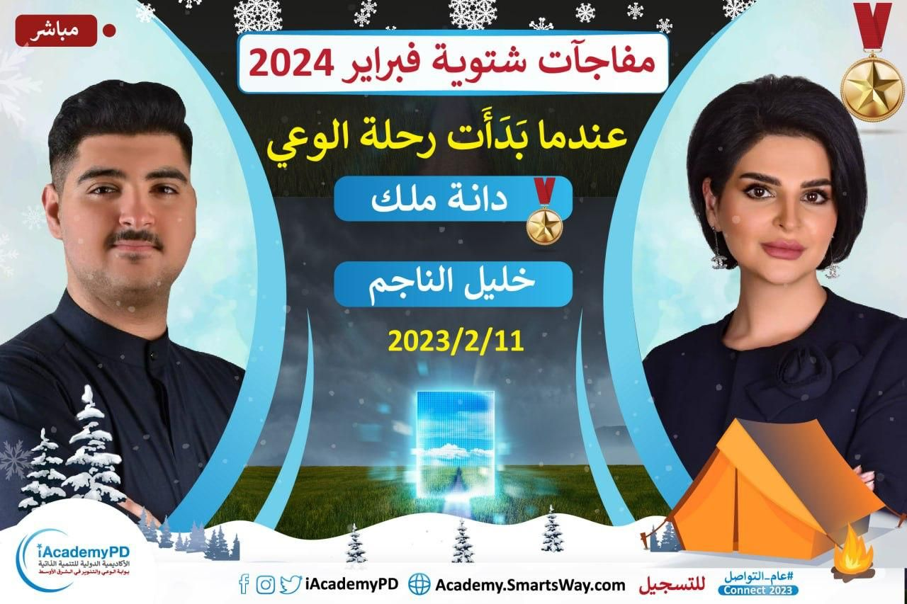
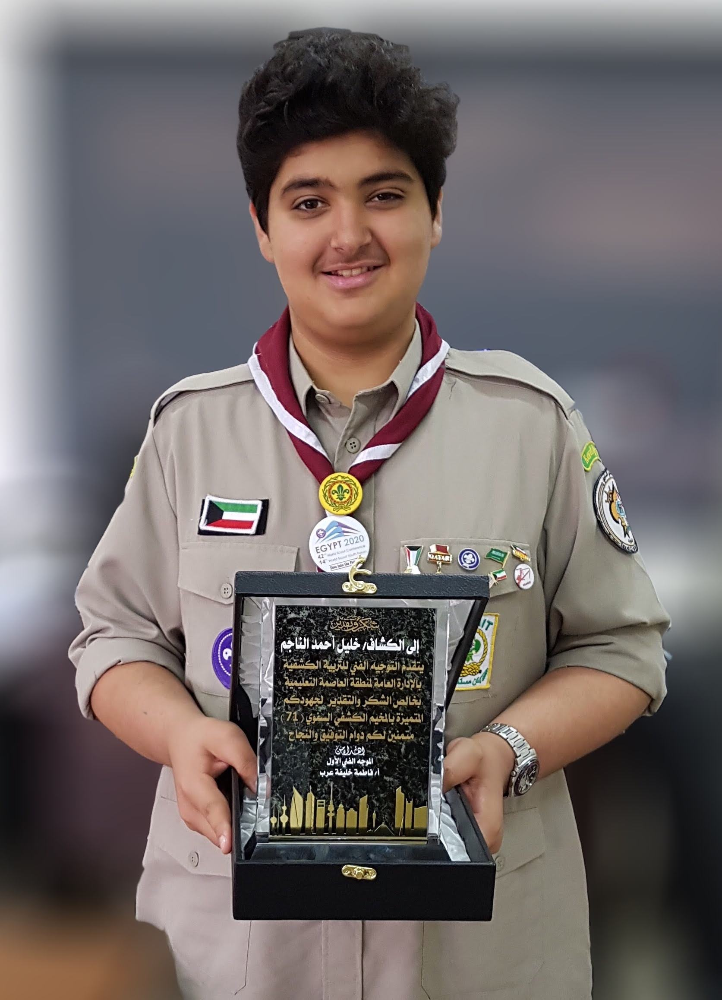
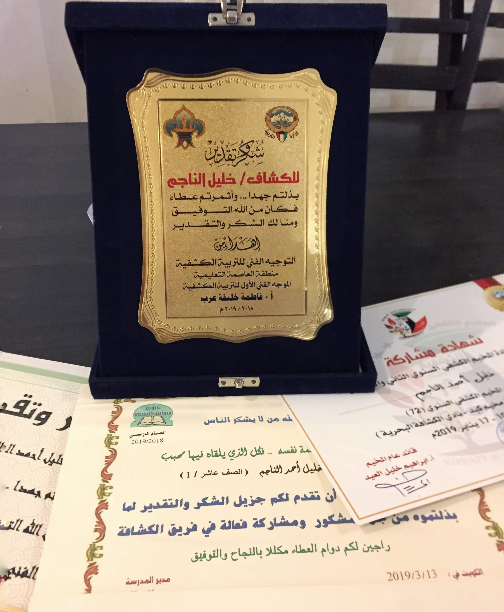

Experience
Barclays Finance Experience
Barclays · Glasgow
6-week finance insight programme alongside 50+ students from 3 universities. Covered financial research, risk management, tax, and strategic pitching. Designed and pitched a financial product targeting Ultra High Net Worth Individuals (UHNWI) to senior Barclays professionals. Strong feedback for clarity, creativity, and feasibility.
View Certificate →Founder, Sanad (سند)
@ask_sanad · Arabic AI Education
Building an Arabic-language AI education platform targeting Gulf Arab youth. Focused on self-development and decision-making through AI tools.
Active View Project →ROWAD 5.0, Runner-Up
Warba Bank · National Innovation Competition
Original 4-person team fell apart under pressure; rebuilt as a 2-person team. Built an LLM-powered chatbot with emotion-aware responses and personalised investment insights. Designed the full UI across 10+ screens, pitched to Warba Bank's board. Runner-up from national field; prize of KD 1,200 (approx. £4,000). Feedback: too technical, learned that complexity does not equal value.
🏆 National Award View Certificate → View Project →Independent Builder
iOS · AI Tools · Infrastructure
Building iOS apps using AI-assisted development. Custom MCP servers, homelab (Raspberry Pi 5 + RTX 3090), tinkering with tiny models, and local LLM workflow systems. AI is not a tool I use occasionally; it is how I build everything.
Coaching Solopreneur
Self-employed · Kuwait
Launched a personal development coaching brand at 17. Built the full product stack independently: ebook, AI assistant, website, newsletter, and all copywriting. Delivered 1:1 coaching. Produced a Goal Setting Mini Guide in Arabic and English. Spoke at the iAcademyPD (70 attendees).
Interviewed Eric Edmeades (on record) - international speaker and founder of WildFit and Business Freedom.
Goal Setting Guide (AR) → Goal Setting Guide (EN) → View Project →Freelance Designer & Social Media Manager
Self-employed · 10+ Clients · Stopped
10+ paying clients across logos, brand identities, and social media content. Self-taught from age 16. Volunteered with the Real Madrid fan association in Saudi Arabia, producing matchday posts and player art. Built a working eye for brand consistency and visual hierarchy.
View Design Work →Education
MA (Hons) Business & Management
University of Glasgow · Adam Smith Business School
Minimum 2:1 secured. Targeting First Class Honours. Dissertation: LLMs as decision-support tools for early-stage founders. PRISMA methodology, 199 papers screened, 64 journal articles included. Also completing a CMI Level 5 Certificate in Management and Leadership alongside the degree.
2:1 Secured · 1st Target CMI Level 5 · Expected 2026Completed Mindvalley Quests including Be Extraordinary for Teams (Vishen Lakhiani), Speak & Inspire (Lisa Nichols), The Power of Boldness (Naveen Jain), Superbrain (Jim Kwik), Building an Unstoppable Brand (Jeffrey Perlman), and AI Mastery.

Featured by Kaplan International Pathways as a student profile.
BSc Marketing (Transferred)
Colorado State University
Began undergraduate studies in the US before transferring to the University of Glasgow. The reset, academically and personally, shaped how I approach work today.
Broadcast Journalism Training
CTV Channel 11 · Colorado State University
Enrolled in a structured broadcast journalism training programme at CSU's campus TV station, covering the basics of TV news production, from fieldwork and camera operation to scriptwriting and editing. Transferred to the University of Glasgow before progressing further.
Media · Production · CommunicationMSc Entrepreneurship, then PhD
Entrepreneurship · Research · Creative Action
Pursuing a Master's in Entrepreneurship, then a PhD. Goal: to become a professor who bridges entrepreneurship research, creative action, and education - bringing rigorous, research-grounded entrepreneurship education to Kuwait and the Gulf, in Arabic, rooted in regional context.
Leadership & Community
Speaker, Consciousness & Leadership
iAcademyPD
Invited to speak on consciousness, leadership, and self-development. Live Zoom session, approximately 70 attendees.

Scout Leader & Member
Kuwait Boy Scouts
Six years as Scout member, progressing to Scout Leader. Awarded Best Scout of the Year twice, the highest individual recognition in the programme.
🏆 Best Scout of the Year × 2
